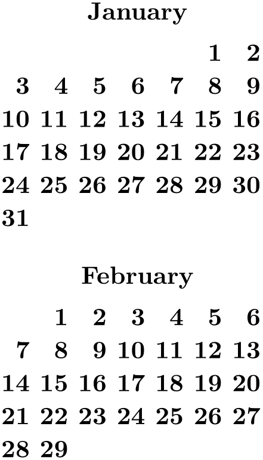

The TikZ and PGF Packages
Manual for version 3.1.10
Libraries
47 Calendar Library¶
-
TikZ Library calendar ¶
\usetikzlibrary{calendar} %
LaTeX
and plain
TeX
\usetikzlibrary[calendar] % ConTeXt
The library defines the
\calendar command, which can be used
to typeset calendars. The command relies on the
\pgfcalendar command from the
pgfcalendar
package, which is loaded automatically.
The \calendar command is quite configurable, allowing you to produce all kinds of different calendars.
47.1 Calendar Command¶
The core command for creating calendars in TikZ is the \calendar command. It is available only inside {tikzpicture} environments (similar to, say, the \draw command).
-
\calendar⟨calendar specification⟩; ¶
-
• [⟨options⟩]
You provide ⟨options⟩ in square brackets as in [red,draw=none]. These ⟨options⟩ can be any TikZ option and they apply to the whole calendar. You can provide this element multiple times, the effect accumulates.
-
• (⟨name⟩)
This has the same effect as saying [name=⟨name⟩]. The effect of providing a ⟨name⟩ is explained later. Note already that a calendar is not a node and the ⟨name⟩ is not the name of a node.
-
• at (⟨coordinate⟩)
This has the same effect as saying [at=(⟨coordinate⟩)].
-
• if (⟨date condition⟩) ⟨options or commands⟩else⟨else options or commands⟩
The effect of such an if is explained later.
-
/tikz/every calendar(style, initially empty) ¶
-
/tikz/dates=⟨start date⟩ to ⟨end date⟩(no default) ¶
-
/tikz/day xshift=⟨dimension⟩ (no default, initially 3.5ex) ¶
-
/tikz/day yshift=⟨dimension⟩ (no default, initially 3ex) ¶
-
/tikz/month xshift=⟨dimension⟩(no default) ¶
-
/tikz/month yshift=⟨dimension⟩(no default) ¶
-
/tikz/day code=⟨code⟩ (no default, initially see below) ¶
-
/tikz/day text=⟨text⟩(no default) ¶
-
/tikz/every day (initially anchor=base east)(no default) ¶
-
/tikz/month code=⟨code⟩ (no default, initially see below) ¶
-
/tikz/month text=⟨text⟩(no default) ¶
-
/tikz/every month(style, initially empty) ¶
-
/tikz/year code=⟨code⟩(no default) ¶
-
/tikz/year text=⟨text⟩(no default) ¶
-
/tikz/every year(no value) ¶
-
/tikz/if=(⟨conditions⟩)⟨code or options⟩else⟨else code or options⟩(no default) ¶
-
1. It is checked whether the current date is one of the possibilities listed in ⟨conditions⟩. An example of such a condition is Sunday. Thus, when you write if (Saturday,Sunday) {foo}, then foo will be executed for every day in the calendar that is a Saturday or a Sunday.
The command \ifdate and, thereby, \pgfcalendarifdate are used to evaluate the ⟨conditions⟩, see section 89.1.2 for a complete list of possible tests. The most useful tests are: Tests like Monday and so on, workday for the days Monday to Friday, weekend for Saturday and Sunday, equals for testing whether the current date equals a given date, at least and at least for comparing the current date with a given date.
-
2. If the date passes the check, the ⟨code or options⟩ is evaluated in a manner to be described in a moment; if the date fails, the ⟨else code or options⟩ is evaluated, if present.
The ⟨code or options⟩ can either be some code. This is indicated by surrounding the code with curly braces. It can also be a list of TikZ options. This is indicated by surrounding the options with square brackets. For example in the date test if (Sunday) {\draw...} else {\fill...} there are two pieces of code involved. By comparison, if (Sunday) [red] else [green] involves two options.
If ⟨code or options⟩ is code, it is simply executed (for the current day). If it is a list of options, these options are passed to a scope surrounding the current date.
-
1. The before-scope code.
-
2. A scope is opened.
-
3. The at-begin-scope code.
-
4. All date-ifs from the ⟨calendar specification⟩ are executed.
-
5. The at-end-scope code.
-
6. The scope is closed.
-
7. The after-scope code.
-
/tikz/execute before day scope=⟨code⟩(no default) ¶
-
/tikz/execute at begin day scope=⟨code⟩(no default) ¶
-
/tikz/execute at end day scope=⟨code⟩(no default) ¶
-
/tikz/execute after day scope=⟨code⟩(no default) ¶
The syntax for this command is similar to commands like \node or \matrix. However, it has its complete own parser and only those commands described in the following will be recognized, nothing else. Note, furthermore, that a ⟨calendar specification⟩ is not a path specification, indeed, no path is created for the calendar.
The specification syntax. The ⟨calendar specification⟩ must be a sequence of elements, each of which has one of the following structures:
At the beginning of every calendar, the following style is used:
This style is used with every calendar.
The date range. The overall effect of the \calendar command is to execute code for each day of a range of dates. This range of dates is set using the following option:
This option specifies the date range. Both the start and end date are specified and described in section 89.1.1. In short: You can provide ISO-format type dates like 2006-01-02, you can replace the day of month by last to refer to the last day of a month (so 2006-02-last is the same as 2006-02-28), and you can add a plus sign followed by a number to specify an offset (so 2006-01-01+-1 is the same as 2005-12-31).
It will be useful to fix two pieces of terminology for the following descriptions: The \calendar command iterates over the dates in the range. The current date refers to the current date the command is processing as it iterates over the dates. For each current date code is executed, which will be called the current date code. The current date code consists of different parts, to be detailed later.
The central part of the current date code is the execution of the code \tikzdaycode. By default, this code simply produces a node whose text is set to the day of month. This means that unless further action is taken, all days of a calendar will be put on top of each other! To avoid this, you must modify the current date code to shift days around appropriately. Predefined arrangements like day list downward or week list do this for you, but you can define arrangements yourself. Since defining an arrangement is a bit tricky, it is explained only later on. For the time being, let us use a predefined arrangement to produce our first calendar:
Changing the spacing. In the above calendar, the spacing between the days is determined by numerous options. Most arrangements do not use all of these options, but only those that apply naturally.
Specifies the horizontal shift between days. This is not the gap between days, but the shift between the anchors of their nodes.
Specifies the vertical shift between days. Again, this is the shift between the anchors of their nodes.
Specifies an additional horizontal shift between different months.
Specifies an additional vertical shift between different months.

Changing the position of the calendar. The calendar is placed in such a way that, normally, the anchor of the first day label is at the origin. This can be changed by using the at option. When you say at={(1,1)}, this anchor of the first day will lie at coordinate \((1,1)\).
In general, arrangements will not always place the anchor of the first day at the origin. Sometimes, additional spacing rules get in the way. There are different ways of addressing this problem: First, you can just ignore it. Since calendars are often placed in their own {tikzpicture} and since their size is computed automatically, the exact position of the origin often does not matter at all. Second, you can put the calendar inside a node as in ...node {\tikz \calendar...}. This allows you to position the node in the normal ways using the node’s anchors. Third, you can be very clever and use a single-cell matrix. The advantage is that a matrix allows you to provide any anchor of any node inside the matrix as an anchor for the whole matrix. For example, the following calendar is placed in such a way the center of 2000-01-20 lies on the position \((2,2)\):
\usetikzlibrary {calendar}
\begin{tikzpicture}
\draw[help lines] (0,0) grid
(3,2);
\matrix [anchor=cal-2000-01-20.center] at
(2,2)
{ \calendar(cal)[dates=2000-01-01
to 2000-01-31,week list]; \\};
\end{tikzpicture}
Unfortunately, the matrix-base positions, which is the cleanest way, isn’t as portable as the other approaches (it currently does not work with the svg backend for instance).
Changing the appearance of days. As mentioned before, each day in the above calendar is produced by an execution of the \tikzdaycode. Each time this code is executed, the coordinate system will have been set up appropriately to place the day of the month correctly. You can change both the code and its appearance using the following options.
This option allows you to change the code that is executed for each day. The default is to create a node with an appropriate name, but you can change this:
The default code is the following:
\node[name=\pgfcalendarsuggestedname,every day]{\tikzdaytext};
The first part causes the day nodes to be accessible via the following names: If ⟨name⟩ is the name given to the calendar via a name= option or via the specification element (⟨name⟩), then \pgfcalendarsuggestedname will expand to ⟨name⟩-⟨date⟩, where ⟨date⟩ is the date of the day that is currently being processed in ISO format.
For example, if January 1, 2006 is being processed and the calendar has been named mycal, then the node containing the 1 for this date will be names mycal-2006-01-01. You can later reference this node.
\usetikzlibrary {calendar}
\begin{tikzpicture}
\calendar (mycal) [dates=2000-01-01
to 2000-01-31,week list];
\draw[red] (mycal-2000-01-20) circle
(4pt);
\end{tikzpicture}
This option changes the setting of the \tikzdaytext. By default, this macro simply yields the current day of month, but you can change it arbitrarily. Here is a silly example:
More useful examples are based on using the \% command. This command is redefined inside a \pgfcalendar to mean the same as \pgfcalendarshorthand. (The original meaning of \% is lost inside the calendar, you need to save if before the calendar if you really need it.)
The \% inserts the current day/month/year/day of week in a certain format into the text. The first letter following the \% selects the type (permissible values are d, m, y, w), the second letter specifies how the value should be displayed (- means numerically, = means numerically with leading space, 0 means numerically with leading zeros, t means textual, and . means textual, abbreviated). For example \%d0 gives the day with a leading zero (for more details see the description of \pgfcalendarshorthand in section 89.2).
Let us redefine the day text so that it yields the day with a leading zero:
This style is executed by the default node code for each day. The every day style is useful for changing the way days look. For example, let us make all days red:
Changing the appearance of month and year labels. In addition to the days of a calendar, labels for the months and even years (for really long calendars) can be added. These labels are only added once per month or year and this is not done by default. Rather, special styles starting with month label place these labels and make them visible:

The following options change the appearance of the month and year label:
This option allows you to specify what the macro \tikzmonthcode should expand to.
By default, the \tikzmonthcode it is set to
\node[every month]{\tikzmonthtext};
Note that this node is not named by default.
This option allows you to change the macro \tikzmonthtext. By default, the month text is a long textual presentation of the current month being typeset.
\usetikzlibrary {calendar}
\tikz \calendar[dates=2000-01-01
to 2000-01-31,week list,
month label above centered,
month text=\textcolor{red}{\%mt} \%y-];
This style can be used to change the appearance of month labels.
Works like month code, only for years.
Works like month text, only for years.
Works like every month, only for years.
Date ifs. Much of the power of the \calendar command comes from the use of conditionals. There are two equivalent way of specifying such a conditional. First, you can add the text if (⟨conditions⟩) ⟨code or options⟩ to your ⟨calendar specification⟩, possibly followed by else⟨else code or options⟩. You can have multiple such conditionals (but you cannot nest them in this simple manner). The second way is to use the following option:
This option has the same effect as giving a corresponding if in the ⟨calendar specification⟩. The option is mostly useful for use in the every calendar style, where you cannot provide if conditionals otherwise.
Now, regardless of how you specify a conditional, it has the following effect (individually and independently for each date in the calendar):
Let us now have a look at some examples. First, we use a conditional to make all Sundays red.

Next, let us do something on a specific date:
You might wonder why the circle seems to be “off” the date. Actually, it is centered on the date, it is just that the date label uses the base east anchor, which shifts the label up and right. To overcome this problem we can change the anchor:
However, the single day dates are now no longer aligned correctly. For this, we can change the day text to \%d=, which adds a space at the beginning of single day text.
In the following, more technical information is covered. Most readers may wish to skip it.
The current date code. As mentioned earlier, for each date in the calendar the current date code is executed. It is the job of this code to shift around date nodes, to render the date nodes, to draw the month labels and to do all other stuff that is necessary to draw a calendar.
The current date code consists of the following parts, in this order:
All of the codes mentioned above can be changed using appropriate options, see below. In case you wonder why so many are needed, the reason is that the current date code as a whole is not surrounded by a scope or TeX group. This means that code executed in the before-scope code and in the after-scope code has an effect on all following days. For example, if the after-scope code modifies the transformation matrix by shifting everything downward, all following days will be shifted downward. If each day does this, you get a list of days, one below the other.
However, you do not always want code to have an effect on everything that follows. For instance, if a day has the date-if if (Sunday) [red], we only want this Sunday to red, not all following days also. Similarly, sometimes it is easier to compute the position of a day relative to a fixed origin and we do not want any modifications of the transformation matrix to have an effect outside the scope.
By cleverly adjusting the different codes, all sorts of different day arrangements are possible.
The ⟨code⟩ is executed before everything else for each date. Multiple calls of this option have an accumulative effect. Thus, if you use this option twice, the code from the first use is used first for each day, followed by the code given the second time.
This code is execute before everything else inside the scope of the current date. Again, the effect is accumulative.
This code is executed just before the day scope is closed. The effect is also accumulative, however, in reverse order. This is useful to pair, say, \scope and \endscope commands in at-begin- and at-end-code.
This is executed at the very end of the current date, outside the scope. The accumulation is also in reverse.
In the rest of the following subsections we have a look at how the different scope codes can be used to create different calendar arrangements.
47.1.1 Creating a Simple List of Days¶
We start with a list of the days of the calendar, one day below the other. For this, we simply shift the coordinate system downward at the end of the code for each day. This shift must be outside the day scope as we want day shifts to accumulate. Thus, we use the following code:
\usetikzlibrary {calendar}
\tikz
\calendar [dates=2000-01-01
to 2000-01-08,
execute after day scope=
{\pgftransformyshift{-1em}}];
Clearly, we can use this approach to create day lists going up, down, right, left, or even diagonally.
47.1.2 Adding a Month Label¶
We now want to add a month label to the left of the beginning of each month. The idea is to do two things:
-
1. We add code that is executed only on the first of each month.
-
2. The code is executed before the actual day is rendered. This ensures that options applying to the days do not affect the month rendering.
We have two options where we should add the month code: Either we add it at the beginning of the day scope or before. Either will work fine, but it might be safer to put the code inside the scope to ensure that settings to not inadvertently “leak outside”.
\usetikzlibrary {calendar}
\tikz
\calendar
[dates=2000-01-01
to 2000-01-08,
execute after day scope={\pgftransformyshift{-1em}},
execute at begin day scope=
{\ifdate{day of month=1}{\tikzmonthcode}{}},
every month/.append style={anchor=base east,xshift=-2em}];
In the above code we used the \ifdate{⟨condition⟩}{⟨then code⟩}{⟨else code⟩} command, which is described in section 89.2 in detail and which has much the same effect as if (⟨condition⟩){⟨then code⟩} else {⟨else code⟩}, but works in normal code.
47.1.3 Creating a Week List Arrangement¶
Let us now address a more complicated arrangement: A week list. In this arrangement there is line for each week. The horizontal placement of the days is thus that all Mondays lie below each other, likewise for all Tuesdays, and so on.
In order to typeset this arrangement, we can use the following approach: The origin of the coordinate system rests at the anchor for the Monday of each week. That means that at the end of each week the origin is moved downward one line. On all other days, the origin at the end of the day code is the same as at the beginning. To position each day correctly, we use code inside and at the beginning of the day scope to horizontally shift the day according to its day of week.
\usetikzlibrary {calendar}
\tikz
\calendar
[dates=2000-01-01
to 2000-01-20,
% each day is shifted right according to the day of
week
execute at begin day scope=
{\pgftransformxshift{\pgfcalendarcurrentweekday em}},
% after each week, the origin is shifted downward:
execute after day scope=
{\ifdate{Sunday}{\pgftransformyshift{-1em}}{}}];
47.1.4 Creating a Month List Arrangement¶
For another example, let us create an arrangement that contains one line for each month. This is easy enough to do as for weeks, unless we add the following requirement: Again, we want all days in a column to have the same day of week. Since months start on different days of week, this means that each row has to have an individual offset.
One possible way is to use the following approach: After each month (or at the beginning of each month) we advance the vertical position of the offset by one line. For horizontal placement, inside the day scope we locally shift the day by its day of month. Furthermore, we must additionally shift the day to ensure that the first day of the month lies on the correct day of week column. For this, we remember this day of week the first time we see it.

\usetikzlibrary {calendar}
\newcount\mycount
\tikz
\calendar
[dates=2000-01-01
to 2000-02-last,
execute before day scope=
{
\ifdate{day
of
month=1} {
% Remember the weekday of first day of month
\mycount=\pgfcalendarcurrentweekday
% Shift downward
\pgftransformyshift{-1em}
}{}
},
execute at begin day scope=
{
% each day is shifted right according to the day of
month
\pgftransformxshift{\pgfcalendarcurrentday em}
% and additionally according to the weekday of the
first
\pgftransformxshift{\the\mycount em}
}];
47.2 Arrangements¶
An arrangement specifies how the days of calendar are arranged on the page. The calendar library defines a number of predefined arrangements.
We start with arrangements in which the days are listed in a long line.
-
/tikz/day list downward(style, no value) ¶
This style causes the days of a month to be typeset one below the other. The shift between days is given by day yshift. Between month an additional shift of month yshift is added.
\usetikzlibrary {calendar}
\tikz
\calendar [dates=2000-01-28
to 2000-02-03,
day list downward,month yshift=1em];
-
/tikz/day list upward(style, no value) ¶
Works as above, only the list grows upward instead of downward.
\usetikzlibrary {calendar}
\tikz
\calendar [dates=2000-01-28
to 2000-02-03,
day list upward,month yshift=1em];
-
/tikz/day list right(style, no value) ¶
This style also works as before, but the list of days grows to the right. Instead of day yshift and month yshift, the values of day xshift and month xshift are used.
\usetikzlibrary {calendar}
\tikz
\calendar [dates=2000-01-28
to 2000-02-03,
day list right,month xshift=1em];
-
/tikz/day list left(style, no value) ¶
As above, but the list grows left.
The next arrangement lists days by the week.
-
/tikz/week list(style, no value) ¶
This style creates one row for each week in the range. The value of day xshift is used for the distance between days in each week row, the value of day yshift is used for the distance between rows. In both cases, “distance” refers to the distance between the anchors of the nodes of the days (or, more generally, the distance between the origins of the little pictures created for each day).
The days inside each week are shifted such that Monday is always at the first position (to change this, you need to copy and then modify the code appropriately). If the date range does not start on a Monday, the first line will not start in the first column, but rather in the column appropriate for the first date in the range.
At the beginning of each month (except for the first month in the range) an additional vertical space of month yshift is added. If this is set to 0pt you get a continuous list of days.
The following arrangement gives a very compact view of a whole year.
-
/tikz/month list(style, no value) ¶
In this arrangement there is a row for each month. As for the week list, the day xshift is used for the horizontal distance. For the vertical shift, month yshift is used.
In each row, all days of the month are listed alongside each other. However, it is once more ensured that days in each column lie on the same day of week. Thus, the very first column contains only Mondays. If a month does not start with a Monday, its days are shifted to the right such that the days lie on the correct columns.
\usetikzlibrary {calendar}
\sffamily\scriptsize
\tikz
\calendar [dates=2000-01-01
to 2000-12-31,
month list,month label left,month yshift=1.25em]
if
(Sunday) [black!50];
47.3 Month Labels¶
For many calendars you may wish to add a label to each month. We have already covered how month nodes are created and rendered in the description of the \calendar command: use month text, every month, and also month code (if necessary) to change the appearance of the month labels.
What we have not yet covered is where these labels are placed. By default, they are not placed at all as there is no good “default position” for them. Instead, you can use one of the following options to specify a position for the labels:
-
/tikz/month label left(style, no value) ¶
Places the month label to the left of the first day of the month. (For week list and month list where a month does not start on a Monday, the position is chosen “as if” the month had started on a Monday – which is usually exactly what you want.)
\usetikzlibrary {calendar}
\tikz
\calendar [dates=2000-01-28
to 2000-02-03,
day list downward,month yshift=1em,
month label left];
-
/tikz/month label left vertical(style, no value) ¶
This style works like the above style, only the label is rotated counterclockwise by 90 degrees.
\usetikzlibrary {calendar}
\tikz
\calendar [dates=2000-01-28
to 2000-02-03,
day list downward,month yshift=1em,
month label left vertical];
-
/tikz/month label right(style, no value) ¶
This style places the month label to the right of the row in which the first day of the month lies. This means that for a day list the label is to the right of the first day, for a week list it is to the right of the first week, and for a month list it is to the right of the whole month.
\usetikzlibrary {calendar}
\tikz
\calendar [dates=2000-01-28
to 2000-02-03,
day list downward,month yshift=1em,
month label right];
-
/tikz/month label right vertical(style, no value) ¶
Works as above, only the label is rotated clockwise by 90 degrees.
\usetikzlibrary {calendar}
\tikz
\calendar [dates=2000-01-28
to 2000-02-03,
day list downward,month yshift=1em,
month label right vertical];
-
/tikz/month label above left(style, no value) ¶
This style places the month label above of the row of the first day, flushed left to the leftmost column. The amount by which the label is raised is fixed to 1.25em; use the yshift option with the month node to modify this.
\usetikzlibrary {calendar}
\tikz
\calendar [dates=2000-01-28
to 2000-02-03,
day list right,month xshift=1em,
month label above left];
-
/tikz/month label above centered(style, no value) ¶
Works as above, only the label is centered above the row containing the first day.

\usetikzlibrary {calendar}
\tikz
\calendar [dates=2000-02-01
to 2000-02-last,
day list right,month label above centered];
-
/tikz/month label above right(style, no value) ¶
Works as above, but flushed right

-
/tikz/month label below left(style, no value) ¶
Works like month label above left, only the label is placed below the row. This placement is not really useful with the week list arrangement, but rather with the day list right or month list arrangement.
\usetikzlibrary {calendar}
\tikz
\calendar [dates=2000-02-01
to 2000-02-last,
day list right,month label below left];
-
/tikz/month label below centered(style, no value) ¶
Works like month label above centered, only below.
\usetikzlibrary {calendar}
\tikz
\calendar [dates=2000-02-01
to 2000-02-last,
day list right,month label below centered];
47.4 Examples¶
In the following, some example calendars are shown that come either from real applications or are just nice to look at.
Let us start with a year-2100-countdown, in which we cross out dates as we approach the big celebration. For this, we set the shape to strike out for these dates.
\usetikzlibrary {calendar,shapes.misc}
\begin{tikzpicture}
\calendar
[
dates=2099-12-01
to 2100-01-last,
week list,inner sep=2pt,month label above centered,
month text=\%mt
\%y0
]
if
(at most=2099-12-29) [nodes={strike out,draw}]
if
(weekend) [black!50,nodes={draw=none}]
;
\end{tikzpicture}
The next calendar shows a deadline, which is 10 days in the future from the current date. The last three days before the deadline are in red, because we really should be done by then. All days on which we can no longer work on the project are crossed out.
\usetikzlibrary {calendar,shapes.misc}
\begin{tikzpicture}
\calendar
[
dates=\year-\month-\day+-25 to
\year-\month-\day+25,
week list,inner sep=2pt,month label above centered,
month text=\textit{\%mt
\%y0}
]
if
(at least=\year-\month-\day) {}
else
[nodes={strike out,draw}]
if
(at most=\year-\month-\day+7)
[green!50!black]
if
(between=\year-\month-\day+8 and \year-\month-\day+10)
[red]
if
(Sunday)
[gray,nodes={draw=none}]
;
\end{tikzpicture}
The following example is a futuristic calendar that is all about circles:
\usetikzlibrary {calendar}
\sffamily
\colorlet{winter}{blue}
\colorlet{spring}{green!60!black}
\colorlet{summer}{orange}
\colorlet{fall}{red}
% A counter, since TikZ is not clever enough (yet) to
handle
% arbitrary angle systems.
\newcount\mycount
\begin{tikzpicture}
[transform shape,
every day/.style={anchor=mid,font=\fontsize{6}{6}\selectfont}]
\node{\normalsize\the\year};
\foreach \month/\monthcolor in
{1/winter,2/winter,3/spring,4/spring,5/spring,6/summer,
7/summer,8/summer,9/fall,10/fall,11/fall,12/winter}
{
% Compute angle:
\mycount=\month
\advance\mycount by
-1
\multiply\mycount by
30
\advance\mycount by
-90
% The actual calendar
\calendar at
(\the\mycount:6.4cm)
[
dates=\the\year-\month-01 to
\the\year-\month-last,
]
if
(day of month=1) {\color{\monthcolor}\tikzmonthcode}
if
(Sunday) [red]
if
(all)
{
% Again, compute angle
\mycount=1
\advance\mycount by
-\pgfcalendarcurrentday
\multiply\mycount by
11
\advance\mycount by
90
\pgftransformshift{\pgfpointpolar{\mycount}{1.4cm}}
};
}
\end{tikzpicture}
Next, let’s us have a whole year in a tight column:
\usetikzlibrary {calendar}
\begin{tikzpicture}
\small\sffamily
\colorlet{darkgreen}{green!50!black}
\calendar[dates=\year-01-01 to
\year-12-31,week list,
month label left,month yshift=0pt,
month text=\textcolor{darkgreen}{\%m0}]
if
(Sunday) [black!50];
\end{tikzpicture}